کدهای برنامه را به نحوی تغییردهید که بعد از نام هر برند یک جداکننده قرار گیرد.
نوشتن در فایل: نوشتن یک خط پس از تعیین مسیر، میتوانید با استفاده از متد () write_text در یک فایل متنی بنویسید. برای دیدن نحوۀ کار این تابع، یک پیام ساده نوشته و آن را به جای چاپ روی صفحه، در فایل متنی ذخیره کنید (شکل ٧٢):
پس از نوشتن برنامه و اجرای آن، خروجی در ترمینال مشاهده نمیکنید. حالا فایل mobile_brands.txt را باز کنید. مشاهده میکنید متن شما در فایل نوشته و محتویات قبلی آن پاک شده است.
اگر فایل از قبل وجود داشته باشد، ()write_text محتوای فعلی فایل را پاک کرده و محتوای جدید را در فایل مینویسد.
متد ()write_text چند کار را در پشت صحنه انجام میدهد. اگر فایلی که مسیر به آن اشاره میکند وجود نداشته باشد، آن فایل را ایجاد میکند.
همچنین، پس از نوشتن رشته در فایل، مطمئن میشود که فایل به درستی بسته شده است. فایلهایی که به درستی بسته نشدهاند میتوانند منجر به از دست رفتن یا خراب شدن دادهها شوند.
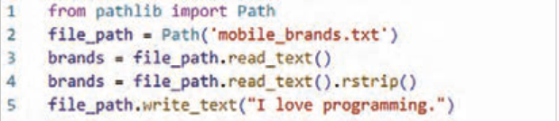
شکل 28
نکته
دو متد read_text و write_text بهطور داخلی مدیریت بستن فایل را انجام میدهند. در این حالتها، pathlib خودش تضمین میکند که فایل بهطور ایمن باز و سپس بسته شود.
صفحه ۲۶۱
اضافه کردن برند جدید برای نوشتن بیش از یک خط در یک فایل، باید رشتهای بسازید که شامل کل محتوای فایل باشد و سپس () write_text را با آن رشته فراخوانی کنید.
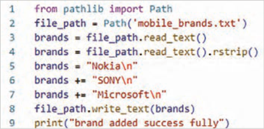
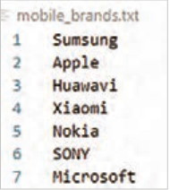
شکل 29
فعالیت
دو برند دیگر"LG" و"Motorola" را به فایل "mobile_brands.txt" اضافه کنید.
فعالیت
برنامهای بنویسیدکه در یک حلقه مدل تلفنهای همراه را از کاربر بپرسد. وقتی پاسخ میدهد، آنها را در فایلی به نام "mobile_model.txt" بنویسد. هر مدل در یک خط از فایل ظاهر شود.
مدیریت استثناها (Exceptions) در هنگام اجرای برنامه، ممکن است خطاهایی رخ دهند که باعث توقف برنامه شوند. پایتون برای برخورد با این خطاها از سازوکاری به نام استثنا (Exception) استفاده میکند.
هر وقت پایتون در اجرای برنامه با مشکلی روبهرو شود و نداند چه باید بکند، یک «شیء استثنا» ایجاد میکند.
اگر برنامهنویس کدی برای مدیریت آن استثنا نوشته باشد، برنامه بدون توقف به کار خود ادامه میدهد. اما اگر استثنا مدیریت نشده باشد، اجرای برنامه متوقف و پیغامی شامل نوع خطا و محل آن نمایش داده میشود که به آن ردیابی (Traceback) میگویند.
شکل 30
صفحه ۲۶۲
مدیریت خطای اشتباه درنوع داده: گاهی برنامهنویس اشتباهًا دادهای از نوع نادرست وارد میکند. مثًًلا وقتی میخواهد رشتهای (متن) را به عدد تبدیل کند اما مقدارش فقط متن باشد، خطای ValueError پیش میآید:
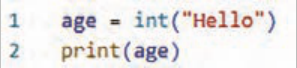
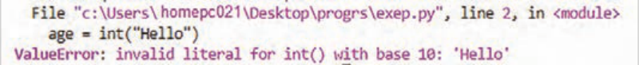
شکل 31
مدیریت خطای تقسیم بر صفر: یکی از خطاهای رایج در برنامهنویسی، تقسیم عدد بر صفر است. این کار از نظر ریاضی ممکن نیست و پایتون سعی میکند برنامه را ادامه دهد ولی این کار ممکن نیست، پس برنامه متوقف و پایتون چیزی به اسم ردیابی برگشتی یا همان Traceback نشان میدهد.
شکل 32
یعنی وقتی پایتون با چنین دستوری روبهرو میشود، استثنایی به نام ZeroDivisionError ایجاد میکند.
یعنی: خطا دقیقاً در کدام خط پیش آمده است. چه نوع خطایی بوده است (مثلاًً ZeroDivisionError یا ValueError). و تابع یا بخشی از کد که باعث خطا شده است را نشان میدهد.
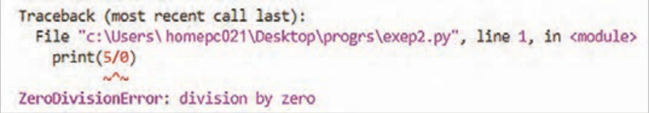
شکل 33
از این اطلاعات میتوانید برای اصلاح برنامه استفاده کنید. به پایتون بگویید که هنگام وقوع این نوع استثنا چه کاری انجام دهد. به این ترتیب، اگر دوباره اتفاق بیفتد، آماده خواهید بود.
مدیریت خطا با بلوکهای try-except: برای مدیریت استثناها در پایتون از بلوکهای try و except استفاده میشود.
بخش try شامل دستوری است که ممکن است خطا ایجاد کند.
بخش except مشخص میکند اگر خطایی رخ داد، برنامه چه واکنشی نشان دهد.
با استفاده از این روش، میتوانید برنامههایی بنویسید که به جای نمایش پیامهای پیچیده و گیجکننده، پیامهای قابل فهم به کاربر نشان دهد.
صفحه ۲۶۳
مدیریت خطای اشتباه درنوع داده: در اینجا پایتون نمیتواند کلمه "Hello" را به عدد تبدیل کند، پس استثنا تولید میشود، اما برنامه با استفاده از بلوک try-except کنترل خطا را در دست میگیرد.
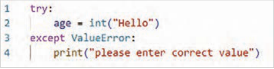
شکل 34
در اینجا پایتون نمیتواند عدد 5 را بر عدد 0 تقسیم کند، پس استثنا تولید میشود، اما برنامه با استفاده از بلوک try-except کنترل خطا را در دست میگیرد.
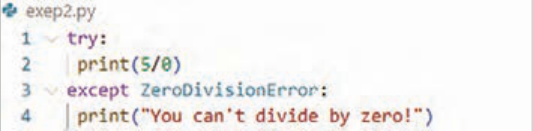
شکل 35
استفاده از استثنائات برای جلوگیری از خطا: مدیریت صحیح استثناها (خطاها) زمانی اهمیت حیاتی پیدا میکند که برنامه پس از وقوع خطا، همچنان کارهای دیگری برای انجام دادن داشته باشد. این موقعیت بهویژه در برنامههایی که به طور مداوم از کاربر ورودی دریافت میکنند، رایج است. اگر برنامه بتواند به ورودی نامعتبر به شیوهای مناسب پاسخ دهد، بهجای متوقف شدن و از کار افتادن، میتواند بهطور هوشمندانه ورودیهای معتبرتری را از کاربر درخواست کند و به اجرای خود ادامه دهد.
برای یادگیری این موضوع توضیحاتی که در ادامه آمده است را با دقت بخوانید و انجام دهید.
این برنامه از کاربر میخواهد که عدد اول را وارد کند و اگر کاربر برای خروج q را وارد نکند، عدد دوم را وارد میکند.
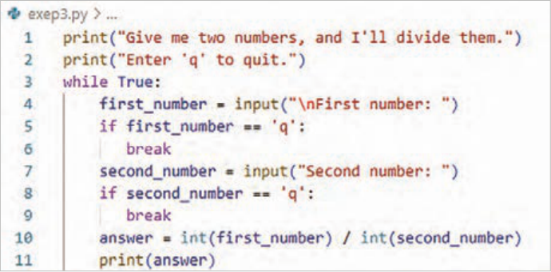
شکل 36
صفحه ۲۶۴
سپس این دو عدد را بر هم تقسیم میکند تا به جواب برسد.
این برنامه هیچ کاری برای مدیریت خطاها انجام نمیدهد، اگر کاربر عدد دوم را صفر واردکند، درخواست تقسیم بر صفر باعث از کار افتادن آن میشود:
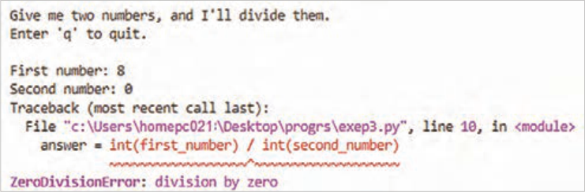
شکل 37
نکته
اگرچه توقف ناگهانی برنامه (crash) قطعًا بد است، اما نمایش جزئیات فنی خطا (Traceback) نیز ایده خوبی نیست. این جزئیات برای کاربران معمولی سردرگمکننده است و در محیطهای مخرب، اطلاعات ارزشمندی را در اختیار مهاجمان قرار میدهد. مهاجم با دیدن Traceback، نه تنها نام برنامه شما را میفهمد، بلکه میتواند بخشی از منطق کد را که دچار نقص شدهاست، مشاهدهکند. یک مهاجم حرفهای میتواند از این اطلاعات برای فهمیدن اینکه دقیقاً چه نوع حملاتی را باید علیه کد شما به کار ببرد، استفاده کند.
کاربرد TheelseBlock: وقتی در پایتون از دستورات try و except استفاده کنید، در واقع به مفسر (رایانه) میگویید: "یک کار را امتحان کن، و اگر خراب شد، این کار جایگزین را انجام بده." حالا، بلوک else دقیقًا به چه دردی میخورد؟
else یعنی: "فقط و فقط در صورتی این کار را انجام بده که بلوک try کاملاً، بدون هیچ خطایی، موفقیتآمیز بود."
شکل 38
صفحه ۲۶۵
اگر خطایی در بلوک try (مثلاًً تقسیم عدد بر صفر) رخ دهد، پایتون مستقیم به بلوک except میرود و بلوک else کاملاً نادیده گرفته میشود. این قابلیت کمک میکند، کدی را که فقط پس از موفقیت کامل اجرا شود (مثلاًً نمایش نتیجه نهایی یا ذخیره در فایل)، از کدی که فقط برای تست خطا نوشته شده جدا کنید. این کار برنامه را هم تمیزتر و هم منطقیتر میکند.
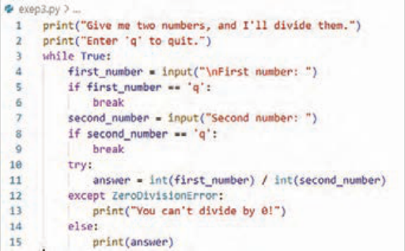
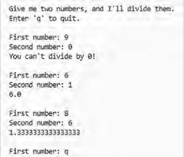
شکل 39
مدیریت خطای FileNotFoundError: این خطا یکی از رایجترین استثناهایی است که برنامهنویسان هنگام کار با فایلها با آن روبهرو میشوند. دلایل متعددی برای این خطا وجود دارد: مسیر اشتباه، نام فایل غلط، یا حذف شدن فایل.
بلوک try-except اجازه میدهد که کد را اجرا کنید و در صورت بروز این مشکل خاص، به جای متوقف شدن برنامه، یک واکنش مناسب نشان دهید.
شکل 40
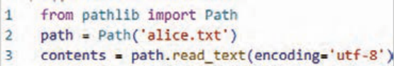
در مثال برنامه تلاش میکند فایلی را که اصًلا وجود ندارد بخواند.
شکل 41
صفحه ۲۶۶
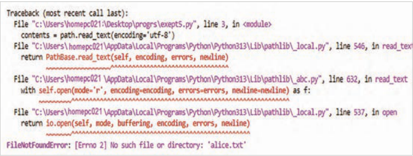
شکل 42
توجه داشته باشید که از متد ()read_text کمی متفاوت از آنچه قبلاً دیدید استفاده شده است. آرگومان encoding زمانی ضروری است که کدگذاری پیشفرض سیستم شما با کدگذاری فایلی که در حال خواندن آن هستید مطابقت نداشته باشد. این وضعیت به احتمال زیاد هنگام خواندن فایلی رخ میدهد که روی سیستم شما ایجاد نشده باشد.
پایتون نمیتواند از یک فایلی که وجود ندارد بخواند، بنابراین یک استثنا (Exception) ایجاد میکند (به عبارتی، خطا صادر میکند).
بنابراین برای مدیریت خطایی که ایجاد میشود، بلوک try با خطی که در traceback به عنوان مشکلساز شناسایی شده است، آغاز میشود.
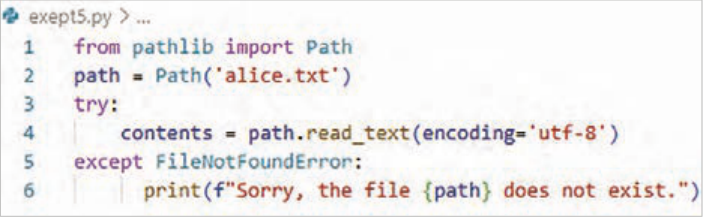
شکل 43
در مثال کد خط ٤ که شامل ()read_text است باعث بروز خطا شده است.
در این مثال، کد موجود در بلوک try خطای FileNotFoundError تولید میکند، بنابراین یک بلوک except که با خطا مطابقت دارد، باید نوشته شود. سپس پایتون کد موجود در آن بلوک را زمانی که فایل پیدا نمیشود اجرا میکند و نتیجه به جای یک traceback، یک پیام خطای کاربرپسند است:
شکل 44
Page 260
Traversing the lines of a file with a for loop
Figure 27
Activity
Change the program code so that a separator is placed after the name of each brand.
Writing to a file: Writing one line After you set the path, you can write to a text file using the write_text() method. To see how this function works, write a simple message and store it in a text file instead of printing it on the screen (Figure 72):
After writing the program and running it, you do not see output in the terminal. Now open the file mobile_brands.txt. You see that your text has been written in the file and its previous contents have been erased.
If the file already exists, write_text() clears the current contents of the file and writes the new content in the file.
The write_text() method does several things behind the scenes. If the file that the path points to does not exist, it creates that file.
Also, after writing the string to the file, it makes sure the file is closed correctly. Files that are not closed correctly can lead to data being lost or corrupted.
Figure 28
Note
The two methods read_text and write_text handle closing the file internally. In these cases, pathlib itself guarantees that the file is opened and then closed safely.
Page 261
Adding a new brand To write more than one line to a file, you must build a string that includes the entire contents of the file and then call write_text() with that string.
Figure 29
Activity
Add two more brands, "LG" and "Motorola", to the file "mobile_brands.txt".
Activity
Write a program that, in a loop, asks the user for mobile phone models. When the user answers, write them to a file named "mobile_model.txt". Each model should appear on one line of the file.
Managing exceptions (Exceptions) While a program is running, errors may occur that cause the program to stop. Python uses a mechanism called an exception (Exception) to deal with these errors.
Whenever Python faces a problem while running the program and does not know what to do, it creates an “exception object.”
If the programmer has written code to manage that exception, the program continues without stopping. But if the exception has not been managed, execution of the program stops and a message is displayed that includes the type of error and its location; this is called a traceback (Traceback).
Figure 30
Page 262
Managing a wrong data-type error: Sometimes the programmer mistakenly enters data of the wrong type. For example, when they want to convert a string (text) to a number but its value is only text, a ValueError occurs:
Figure 31
Managing a division-by-zero error: One of the common errors in programming is dividing a number by zero. This is not possible mathematically, and Python tries to continue the program but that is not possible, so the program stops and Python shows something called a traceback, or Traceback.
Figure 32
That is, when Python faces such a statement, it creates an exception named ZeroDivisionError.
That is: exactly which line the error occurred on. What type of error it was (for example, ZeroDivisionError or ValueError). And it shows the function or part of the code that caused the error.
Figure 33
You can use this information to fix the program. Tell Python what to do when this type of exception occurs. That way, if it happens again, you will be ready.
Managing errors with try-except blocks: To manage exceptions in Python, try and except blocks are used.
The try section contains the statement that may cause an error.
The except section specifies how the program should react if an error occurs.
Using this method, you can write programs that show understandable messages to the user instead of displaying complex and confusing messages.
Page 263
Managing a wrong data-type error: Here Python cannot convert the word "Hello" to a number, so an exception is produced, but the program takes control of the error using a try-except block.
Figure 34
Here Python cannot divide the number 5 by the number 0, so an exception is produced, but the program takes control of the error using a try-except block.
Figure 35
Using exceptions to prevent errors: Managing exceptions (errors) correctly becomes critically important when the program still has other work to do after an error occurs. This situation is especially common in programs that continually receive input from the user. If the program can respond to invalid input in an appropriate way, instead of stopping and breaking down, it can intelligently ask the user for more valid input and continue running.
To learn this topic, carefully read and carry out the explanations that follow.
This program asks the user to enter the first number and, if the user does not enter q to exit, enters the second number.
Figure 36
Page 264
Then it divides these two numbers by each other to reach the answer.
This program does nothing to manage errors; if the user enters zero as the second number, the request to divide by zero causes it to break down:
Figure 37
Note
Although a sudden stop of the program (crash) is certainly bad, displaying the technical details of the error (Traceback) is also not a good idea. These details are confusing for ordinary users, and in hostile environments they give valuable information to attackers. By seeing a Traceback, an attacker not only learns the name of your program, but can also see part of the logic of the code that has a flaw. A professional attacker can use this information to understand exactly what kinds of attacks to use against your code.
Using The else Block: When you use try and except statements in Python, you are in fact telling the interpreter (the computer): “Try one action, and if it fails, do this alternative action.” Now, what exactly is the else block useful for?
else means: “Do this action if and only if the try block was completely successful, without any error.”
Figure 38
Page 265
If an error occurs in the try block (for example, dividing a number by zero), Python goes directly to the except block and the else block is completely ignored. This feature helps you separate code that should run only after complete success (for example, displaying the final result or saving to a file) from code written only to test for errors. This makes the program both cleaner and more logical.
Figure 39
Managing a File Not Found Error: This error is one of the most common exceptions programmers face when working with files. There are several reasons for this error: a wrong path, a wrong file name, or the file having been deleted.
A try-except block lets you run the code and, if this particular problem occurs, show an appropriate reaction instead of stopping the program.
Figure 40
In the example the program tries to read a file that does not exist at all.
Figure 41
Page 266
Figure 42
Note that the read_text() method is used a little differently from what you saw before. The encoding argument is necessary when your system’s default encoding does not match the encoding of the file you are reading. This situation is most likely to occur when reading a file that was not created on your system.
Python cannot read from a file that does not exist, so it creates an exception (Exception) (in other words, it raises an error).
So to manage the error that is created, the try block begins with the line that is identified in the traceback as the problematic one.
Figure 43
In the example code, line 4, which includes read_text(), causes the error.
In this example, the code in the try block produces a FileNotFoundError, so an except block that matches the error must be written. Then Python runs the code in that block when the file is not found, and the result, instead of a traceback, is a user-friendly error message: